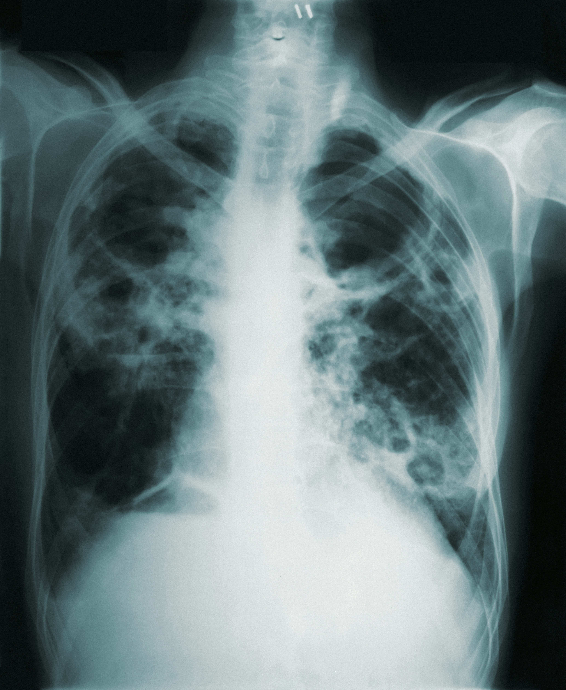

Projects
Methodology & Theory
Covariate-Adjusted Treatment Effects for Recurrent Events with Terminal Outcomes

Covariate-Adjusted Treatment Effects for Recurrent Events with Terminal Outcomes
Affiliation: Arnold School of Public Health | Oct 2025 – Present
Keywords: Recurrent events; terminal events; causal inference; covariate adjustment; clinical trials; survival analysis
Foundational work:
Sun, J., Ye, T., et al.
Improve the Precision of Area Under Curve Estimation for Recurrent Events Through Covariate Adjustment
https://arxiv.org/html/2410.24163v3
Objective
To develop an estimand-driven, covariate-adjusted causal framework for treatment effects on recurrent clinical outcomes when a terminal event (e.g., death) may change survival and, as a consequence, the amount of time recurrent outcomes are observable.
Background and Relation to Prior Work
Recurrent event endpoints are common in clinical trials, including adverse events, hospitalizations, and disease flares. When a terminal event occurs, standard summaries of recurrent outcomes can be difficult to interpret because treatment can affect both (i) the recurrence process and (ii) survival time.
Recent work by Sun and Ye et al. developed covariate-adjusted inference for an AUC of the mean cumulative function (MCF) estimand. Their estimand can be written (schematically) as an AUC functional of an MCF that depends on both the recurrent event rate and survival. As a result, when treatment affects survival, the estimand can change even if the underlying recurrent event rate does not, complicating scientific interpretation in settings where the goal is to isolate recurrence effects.
Methodological Contribution
This project extends the Sun–Cook line of work by refining the causal estimand and developing an estimator that targets recurrence effects in a way that is orthogonal to survival differences. The goal is an estimand whose treatment contrast is zero when treatment affects survival only (but not recurrence), and nonzero only when treatment changes recurrence dynamics.
Key contributions: - A survival-orthogonal recurrence-burden estimand that removes survival-weighting from the target, improving interpretability when survival differs by arm. - An orthogonal, influence-function–based estimator enabling: - valid covariate-adjusted inference,
- robustness to nuisance-model misspecification,
- improved precision under randomized trials. - A causal framing aligned with modern estimand principles for intercurrent events in clinical trials.
Simulation Design
Simulations were conducted under three mechanisms:
- No treatment effect on survival
- Treatment benefit on survival
- Treatment harm on survival
Across scenarios, we compared:
- the proposed orthogonal estimator, and
- estimators corresponding to standard MCF/AUC-based summaries from prior literature.
Performance metrics included bias, variance, and power under covariate adjustment.
Estimand Definition (Overview)
Let \(N_i(t)\) denote the counting process for recurrent events up to time \(t\) for subject \(i\), and let \(D_i\) denote the terminal event time (e.g., death). Let \(C_i\) denote administrative censoring and \(T_i=\min(D_i,C_i)\), with at-risk indicator \(Y_i(t)=I(T_i\ge t)\). Let \(A_i\in\{0,1\}\) denote treatment assignment.
A common summary for recurrent events is the mean cumulative function (MCF): \[ \mu_a(t)=\mathbb{E}\{N_i(t)\mid A_i=a\}, \] which averages recurrent event counts over all individuals. In the presence of a terminal event, MCF-based AUC summaries typically incorporate survival, so treatment effects on survival can influence the estimand even when recurrence dynamics are unchanged.
Proposed Survival-Orthogonal AUC Estimand
Define the marginal cumulative recurrence rate (Nelson–Aalen type target) \[ R_a(t)=\int_0^t \mathbb{E}\{\lambda_a(u\mid X)\}\,du, \] where \(\lambda_a(u\mid X)\) is the recurrent event intensity among those at risk under treatment \(a\).
We define the orthogonal recurrence-burden AUC \[ \widetilde U_a(\tau)=\int_0^\tau R_a(t)\,dt =\int_0^\tau (\tau-u)\,dR_a(u), \] and the treatment contrast \[ \Delta_{\text{orth}}(\tau)=\log\left\{\frac{\widetilde U_1(\tau)}{\widetilde U_0(\tau)}\right\}. \]
Key property (survival orthogonality): if \(dR_1(u)=dR_0(u)\) for all \(u\le\tau\), then \(\widetilde U_1(\tau)=\widetilde U_0(\tau)\) and \(\Delta_{\text{orth}}(\tau)=0\), even when survival differs by arm. This isolates recurrence effects from survival effects and yields a clearer clinical interpretation.
Simulation Results
Estimator vs. True Recurrence Effect
The orthogonal estimator closely tracks the true recurrence effect across regimes, while standard AUC-based estimators deviate when survival differs by treatment arm.

##### Bias Induced by Survival Effects
When survival is treatment-dependent, MCF/AUC-based estimators can exhibit systematic bias relative to a pure recurrence target. The orthogonal estimand substantially reduces this bias.

Power Comparison (Covariate-Adjusted Estimators)
After covariate adjustment, the orthogonal estimator maintains competitive or improved power without inflating type I error.

Clinical Trial Relevance
This framework supports clearer interpretation of repeated clinical outcomes in the presence of death or permanent discontinuation, with direct relevance to:
- safety endpoints,
- recurrent hospitalizations,
- chronic disease flares,
- oncology and neurodegenerative trials.
Status
- Methodological development complete
- Simulation study ongoing
- Manuscript in preparation
NeuroImaging & Survival Analysis
Timing of First Neuroimaging in Alzheimer’s Disease: A Competing-Risk Analysis of Genetic, Cognitive, and Demographic Determinants

Timing of First Neuroimaging in Alzheimer’s Disease: A Competing-Risk Analysis of Genetic, Cognitive, and Demographic Determinants
Affiliation: Arnold School of Public Health | Oct 2025 – Present
Dataset
National Alzheimer’s Coordinating Center (NACC) UDS v3 (2015–2024), linked MRI supplement across 39 Alzheimer’s Disease Centers
Objective
To examine how genetic, cognitive, and demographic factors influence when participants receive their first MRI, while appropriately treating death before imaging as a competing event.
Background
This work is among the first to model the timing of neuroimaging acquisition rather than outcomes derived from MRI. Because MRI ordering varies across clinical, structural, and demographic factors, understanding these patterns highlights inequities in diagnostic access and the representativeness of imaging research cohorts.
Methods
- Defined a cause-specific survival process:
- Event 1: first MRI,
- Event 2: death before MRI.
- Event 1: first MRI,
- Modeled event times using parametric AFT models (Weibull for MRI; log-logistic for death).
- Included APOE ε4 genotype, age, sex, race/ethnicity, education, CDR Global, living situation, independence, and B12 deficiency.
- Conducted sensitivity analyses using cause-specific Cox models with time-varying effects for age, education, and race to address PH violations.
- Developed an interactive prediction tool:
Shiny App: Time to First MRI Predictor
Results
- APOE ε4 did not influence MRI timing after accounting for demographics and cognition.
- Older age, lower education, and non-White race were strong predictors of delayed MRI.
- Higher education and greater independence corresponded to earlier MRI acquisition.
- Time-varying analyses showed early, pronounced disparities that attenuate over longer follow-up.
-Presentation SlideASPH,Columbia
-Extension
PET-based extension; hierarchical (center-level) AFT models; and Bayesian estimation to capture uncertainty and between-center variability.
Also expanding the Shiny app to support clinician-facing and research use.
Bayesian & Numerical Method Based Estimation
Robust Survival Estimation under Interval Censoring: EM Algorithm & Bayesian Assessment via Simulation and Application
Robust Survival Estimation under Interval Censoring: EM Algorithm Assessment via Simulation and Application
Affiliation: Arnold School of Public Health | Aug 2025 – Present
Dataset
Simulated interval-censored survival data (true Weibull baseline) and real-world ovarian cancer dataset with periodic follow-up visits
Objective
To evaluate the accuracy, predictive performance, and practical utility of the EM algorithm for interval-censored survival analysis, benchmarked against parametric and Bayesian AFT models.
Methods
- Turnbull’s Nonparametric Maximum Likelihood Estimator (NPMLE) via the EM algorithm for distribution-free baseline survival estimation
- Parametric Weibull AFT models with covariates for individualized prediction
- Bayesian AFT models for uncertainty quantification and posterior predictive checks
- Performance evaluation using Integrated Squared Error (ISE) in simulation and Integrated Brier Score (IBS) in real data
Results
- EM algorithm: High-fidelity recovery of the true survival curve (ISE = 0.0921; 95% CI: 0.0404–0.1793) without parametric constraints
- Weibull AFT: Outperformed Kaplan–Meier in predictive accuracy on real data (IBS = 0.064 vs. 0.066)
- Bayesian AFT: Enhanced uncertainty quantification and model selection capabilities
- Proposed a three-phase modeling workflow: EM for initial shape recovery, AFT for predictive modeling, and Bayesian AFT for robust uncertainty propagation—validated in both simulated and applied settings.
Clinical Trials
Biopharmaceutical Research Project: Dose-Finding and Missing Data Analysis in Psoriasis Trial
Biopharmaceutical Research Project: Dose-Finding and Missing Data Analysis in Psoriasis Trial
Affiliation: Biopharmaceutical Summer Academy, University of Connecticut | Jul 2025 – Aug 2025
Dataset
Simulated Phase II Trial Data for Brodalumab (Psoriasis Therapy)
Purpose
To determine optimal dosing and evaluate the robustness of early efficacy signals under clinically realistic dropout scenarios
Methods
- Bridge-penalized logistic regression modeling on PASI75 (primary) and PASI50 (validation) endpoints
- Simulated missingness mechanisms: MCAR, MAR (response-based), MNAR (toxicity-index based)
- Multiplicity control and decision reliability assessment across sample sizes
- Sensitivity analyses via complete-case analysis, non-responder imputation, and full-data logistic regression
Result
Across all modeling strategies, the 140 mg and 210 mg doses consistently demonstrated superior clinical efficacy. Despite convergence issues with sparse placebo response under PASI75, results were validated via PASI50 with placebo as reference. The bridge penalization approach improved estimation stability by borrowing strength from an anchor dose while maintaining flexibility. Findings support the advancement of 140 mg and 210 mg doses for Phase III trials. Simulated dropout patterns mirror real-world early-phase attrition, enhancing decision utility.
Survival & Causal Inference Analysis
Individualized Treatment Effects in Advanced Prostate Cancer: A Causal-Survival Modeling Approach to Risk-Guided Therapy
Individualized Treatment Effects in Advanced Prostate Cancer: A Causal-Survival Modeling Approach to Risk-Guided Therapy
Affiliation: Western Michigan University | April 2025 – Present
Dataset
Randomized trial of 475 men treated with high- vs. low-dose diethylstilbestrol (DES) for advanced prostate cancer
Objective
To evaluate treatment effect heterogeneity and guide individualized therapy decisions using risk-adaptive modeling
Methods
Semi-parametric Cox proportional hazards models with treatment–covariate interactions
Causal inference via potential outcomes framework to estimate individualized treatment effects (ITEs)
Continuous effect modification analysis using tumor size and patient age Delta Method to estimate the variance of ITE to enable confidence interval construction.
Result
High-dose DES was not beneficial on average (HR = 0.851; p = 0.519) Significant effect modification: patients with large tumors benefited (interaction HR = 0.691; p = 0.005), while patients over 70 faced increased risk (interaction HR = 1.064; p < 0.001)
Visualizations of patient-specific hazard ratios supported precision treatment strategies which existing studies could not address.
Heart Failure Survival Analysis Using Machine Learning and Causal Methods Methods
 Heart Failure Survival Analysis Using Machine Learning and Causal Inference Methods
Heart Failure Survival Analysis Using Machine Learning and Causal Inference Methods
Affiliation: Western Michigan University | Oct 2024 – Dec 2024
Dataset
Clinical records from 299 heart failure patients (Faisalabad Institute of Cardiology & Allied Hospital, Pakistan)
Objective
To identify key predictors of survival in heart failure patients and explore clinical mediation pathways.
Methods
Supervised learning: Logistic Regression, Random Forest, Support Vector Machine (SVM)
Penalized regression: LASSO, Ridge, Elastic Net
Structural Equation Modeling (SEM) for mediation analysis of prognostic variables
Result
Ejection fraction, serum sodium, and serum creatinine were consistently identified as the strongest survival predictors. Models achieved high AUC and specificity, with interpretable results supporting data-informed clinical decision-making.
Epidemiology & Biostatistics
Clinical Epidemiology Project: Alzheimer’s Disease Subgroup Analysis
Clinical Epidemiology Project: Alzheimer’s Disease Subgroup Analysis
Affiliation: Summer Research, Western Michigan University | Jun 2024 – Aug 2024
Dataset
ACTC Solanezumab Preclinical Trial Data
Purpose
To assess subgroup-specific treatment effects and identify cognitive decline risk factors
Methods
- Regression modeling on MMSE and ARIA endpoints
- Subgroup analyses by APOE4 status, centiloid level, education, and BMI
Result
Found that surrogate endpoint selection (MMSE vs. ARIA) influences identified risk profiles. APOE4 status and centiloid level showed consistent association with AD progression across subgroups.
Health & Epidemiology

Forecasting Lung Cancer Mortality
Compared time series models (SES, HDES, ARIMA) for lung cancer prediction in the U.S.
Never Ending-Analysis
1.HIV: MIxed-Models- Pending
Evaluating the Effectiveness of HAART Regimens on CD4 Cell Count Trajectories in HIV-Infected Women
Affiliation: Final Project, Western Michigan University | Jan 2024 – Apr 2024
Dataset
Women’s Interagency HIV Study (WIHS), 274 HIV-positive women observed over 9 visits across 54 months
Purpose
To assess the impact of HAART regimen type on immune restoration (CD4 cell count) and investigate subgroup-specific treatment responses
Methods
- Regression modeling on log-transformed CD4 counts at last visit using OLS
- Longitudinal analysis using GLS and linear mixed-effects models
- Subgroup effect estimation using interaction terms (age, IDU, alcohol, smoking)
Results
Monotherapy and Triple therapy were associated with higher CD4 restoration than Dual therapy, especially among women with injection drug use. The interaction effects revealed that treatment effectiveness varied significantly across subgroups, notably IDU and smoking status. CD4 improvement trajectories declined over time for all regimens, with Monotherapy and Triple therapy showing slower decline rates. These findings emphasize the importance of personalized HAART strategies based on behavioral and clinical profiles.
2. Methodological Comparison of Longitudinal Models for HAART Data: Addressing Small Sample Sizes and Unbalanced Designs -Pending
Methodological Comparison of Longitudinal Models for HAART Data: Addressing Small Sample Sizes and Unbalaned Designs
Affiliation: Final Project, Western Michigan University | Jan 2024 – Apr 2024
Dataset
Simulated and real data from the WIHS cohort (274 HIV-positive women followed over 54 months with CD4 counts recorded at 9 visits)
Purpose
To compare the performance of LME, GEE, and GLMM in estimating HAART treatment effects under small sample sizes and unbalanced longitudinal designs
Methods
- Applied LME, GEE, and GLMM to subsets of longitudinal data
- Evaluated statistical power, estimation accuracy, and computational efficiency
- Modeled interaction effects (e.g., treatment × time, treatment × IDU, treatment × smoking) across simulated sample sizes (n = 10, 20, 50, 100, 200)
Result
GLMM demonstrated superior accuracy and robustness across varying sample sizes, especially with non-normal outcomes. LME and GEE yielded comparable estimates at larger sample sizes, but diverged under smaller or unbalanced conditions. Interaction terms such as HAART × IDU and HAART × smoking status significantly influenced CD4 trajectories. Results guide model choice in HIV studies based on data characteristics, with GLMM preferred when flexibility and subject-level effects are key.
SAS-Based Risk Modeling
Affiliation: Volunteer Research Assistant, Western Michigan University | Aug 2024 – Present
Dataset
Clinical trial and epidemiological datasets on lung cancer and age-related illness
Purpose
To explore risk factor modeling and the effect of censoring in survival studies
Methods
- Survival analysis using SAS
- Cox models and regression diagnostics
Result
Supported methodological development for censoring-adjusted survival estimation. Assisted in validating models on age-related disease outcomes.